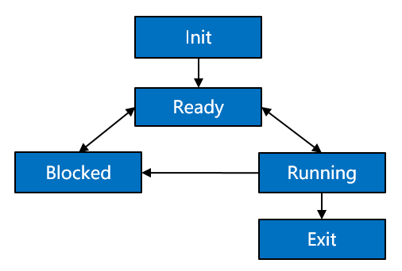

Thread¶
Basic Concepts¶
Threads are the minimum running units that compete for system resources. They can use or wait to use CPUs and use system resources such as memory. They run independently from one another.
Threads in each process of the OpenHarmony kernel run and are scheduled independently. The scheduling of threads in a process is not affected by threads in other processes.
Threads in the OpenHarmony kernel use the preemptive scheduling mechanism, either round-robin (RR) scheduling or First In First Out (FIFO) scheduling.
Threads in the OpenHarmony kernel are assigned 32 priorities, ranging from 0 (highest) to 31 (lowest).
A high-priority thread in a process can preempt the resources of a low-priority thread in this process. The low-priority thread can be scheduled only after the high-priority thread is blocked or terminated.
A thread may have the following states:
Init: The thread is being created.
Ready: The thread is in the ready list and waits for being scheduled by the CPU.
Running: The thread is running.
Blocked: The thread is blocked and suspended. The Blocked states include pend (blocked due to lock, event, or semaphore issues), suspend (active pending), delay (blocked due to delays), and pendtime (blocked by waiting timeout of locks, events, or semaphores).
Exit: The thread stops running and waits for the parent thread to reclaim its control block resources.
Figure 1 State transition of a thread

Description of the thread state transition:
Init→Ready:
When a thread is created, the thread enters the Init state to start initialization after obtaining the control block. After the thread is initialized, the thread is inserted into the scheduling queue and therefore enters the Ready state.
Ready→Running:
When a thread switchover is triggered, the thread with the highest priority in the ready list is executed and enters the Running state. This thread will be deleted from the ready list.
Running→Blocked:
When a running thread is blocked (for example, is pended, delayed, or reading semaphores), the thread is deleted from the ready list, and its state changes from Running to Blocked. Then, a thread switchover is triggered to run the thread with the highest priority in the ready list.
Blocked→Ready/Blocked→Running:
After the blocked thread is restored (for example, the thread is restored, the delay times out, the semaphore reading times out, or semaphores have been read), the thread is added to the ready list and changes from the Blocked state to the Ready state. In this case, if the priority of the restored thread is higher than that of the running thread, a thread switchover occurs to run the restored thread, and therefore the restored thread changes from the Ready state to the Running state.
Ready→Blocked:
A thread may also be blocked (suspended) in the Ready state. The blocked thread will change from the Ready state to the Blocked state and is deleted from the ready list. In this case, the thread will not be scheduled until it is restored.
Running→Ready:
After a thread with a higher priority is created or restored, threads will be scheduled. The thread with the highest priority in the ready list will change to the Running state. The originally running thread will change from the Running state to the Ready state and be added to the ready list.
Running→Exit:
When a running thread is terminated, its state changes from Running to Exit. The thread without the PTHREAD_CREATE_DETACHED attribute will present the Exit state after being terminated.
Blocked→Exit:
If an API is called to delete a blocked thread, the thread changes from the Blocked state to the Exit state.
When to Use¶
After a thread is created, it can be scheduled, suspended, restored, and delayed in user space. In addition, you can set and obtain the scheduling priority and scheduling policy of the thread.
Available APIs¶
The following table describes the APIs provided by the thread management module of the OpenHarmony kernel.
Table 1 APIs provided by the thread management module
Header File | Function | Description | Remarks |
|---|---|---|---|
pthread.h | pthread_attr_destroy | Destroys a thread attribute object. | N/A |
pthread.h | pthread_attr_getinheritsched | Obtains inherit scheduler attributes of a thread attribute object. | N/A |
pthread.h | pthread_attr_getschedparam | Obtains scheduling parameter attributes of a thread attribute object. | N/A |
pthread.h | pthread_attr_getschedpolicy | Obtains scheduling policy attributes of a thread attribute object. | OpenHarmony supports the SCHED_FIFO and SCHED_RR scheduling policies. |
pthread.h | pthread_attr_getstacksize | Obtains the stack size of a thread attribute object. | N/A |
pthread.h | pthread_attr_init | Initializes a thread attribute object. | N/A |
pthread.h | pthread_attr_setdetachstate | Sets the detach state for a thread attribute object. | N/A |
pthread.h | pthread_attr_setinheritsched | Sets inherit scheduler attributes for a thread attribute object. | N/A |
pthread.h | pthread_attr_setschedparam | Sets scheduling parameter attributes for a thread attribute object. | A larger value represents a higher priority of the thread in the system. Note: The inheritsched field of the pthread_attr_t attribute must be set to PTHREAD_EXPLICIT_SCHED. Otherwise, the configured thread scheduling priority does not take effect. The default value is PTHREAD_INHERIT_SCHED. |
pthread.h | pthread_attr_setschedpolicy | Sets scheduling policy attributes for a thread attribute object. | OpenHarmony supports the SCHED_FIFO and SCHED_RR scheduling policies. |
pthread.h | pthread_attr_setstacksize | Sets the stack size for a thread attribute object. | N/A |
pthread.h | pthread_getattr_np | Obtains the attributes of a created thread. | N/A |
pthread.h | pthread_cancel | Sends a cancellation request to a thread. | N/A |
pthread.h | pthread_testcancel | Requests delivery of any pending cancellation request. | N/A |
pthread.h | pthread_setcanceltype | Sets the cancelability type for the calling thread. | N/A |
pthread.h | pthread_setcancelstate | Sets the cancelability state for the calling thread. | N/A |
pthread.h | pthread_create | Creates a thread. | N/A |
pthread.h | pthread_detach | Detaches a thread. | N/A |
pthread.h | pthread_equal | Compares whether two thread IDs are equal. | N/A |
pthread.h | pthread_exit | Terminates the calling thread. | N/A |
pthread.h | pthread_getschedparam | Obtains the scheduling policy and parameters of a thread. | OpenHarmony supports the SCHED_FIFO and SCHED_RR scheduling policies. |
pthread.h | pthread_join | Waits for a thread to terminate. | N/A |
pthread.h | pthread_self | Obtains the ID of the calling thread. | N/A |
pthread.h | pthread_setschedprio | Sets a static scheduling priority for a thread. | N/A |
pthread.h | pthread_kill | Sends a signal to a thread. | N/A |
pthread.h | pthread_once | Enables the initialization function to be called only once. | N/A |
pthread.h | pthread_atfork | Registers a fork handler to be called before and after fork(). | N/A |
pthread.h | pthread_cleanup_pop | Removes the routine at the top of the clean-up handler stack. | N/A |
pthread.h | pthread_cleanup_push | Pushes the routine to the top of the clean-up handler stack. | N/A |
pthread.h | pthread_barrier_destroy | Destroys a barrier (an advanced real-time thread). | N/A |
pthread.h | pthread_barrier_init | Initializes a barrier (an advanced real-time thread). | N/A |
pthread.h | pthread_barrier_wait | Synchronizes participating threads at a barrier. | N/A |
pthread.h | pthread_barrierattr_destroy | Destroys a barrier attribute object. | N/A |
pthread.h | pthread_barrierattr_init | Initializes a barrier attribute object. | N/A |
pthread.h | pthread_mutex_destroy | Destroys a mutex. | N/A |
pthread.h | pthread_mutex_init | Initializes a mutex. | N/A |
pthread.h | pthread_mutex_lock | Locks a mutex. | N/A |
pthread.h | pthread_mutex_trylock | Attempts to lock a mutex. | N/A |
pthread.h | pthread_mutex_unlock | Unlocks a mutex. | N/A |
pthread.h | pthread_mutexattr_destroy | Destroys a mutex attribute object. | N/A |
pthread.h | pthread_mutexattr_gettype | Obtains the mutex type attribute. | N/A |
pthread.h | pthread_mutexattr_init | Initializes a mutex attribute object. | N/A |
pthread.h | pthread_mutexattr_settype | Sets the mutex type attribute. | N/A |
pthread.h | pthread_mutex_timedlock | Blocks the calling thread to lock a mutex. | N/A |
pthread.h | pthread_rwlock_destroy | Destroys a read-write lock. | N/A |
pthread.h | pthread_rwlock_init | Initializes a read-write lock. | N/A |
pthread.h | pthread_rwlock_rdlock | Applies a read lock to a read-write lock. | N/A |
pthread.h | pthread_rwlock_timedrdlock | Blocks the calling thread to lock a read-write lock for reading. | N/A |
pthread.h | pthread_rwlock_timedwrlock | Blocks the calling thread to lock a read-write lock for writing. | N/A |
pthread.h | pthread_rwlock_tryrdlock | Attempts to apply a read lock to a read-write lock. | N/A |
pthread.h | pthread_rwlock_trywrlock | Attempts to apply a write lock to a read-write lock. | N/A |
pthread.h | pthread_rwlock_unlock | Unlocks a read-write lock. | N/A |
pthread.h | pthread_rwlock_wrlock | Applies a write lock to a read-write lock. | N/A |
pthread.h | pthread_rwlockattr_destroy | Destroys a read-write lock attribute object. | N/A |
pthread.h | pthread_rwlockattr_init | Initializes a read-write lock attribute object. | N/A |
pthread.h | pthread_cond_broadcast | Unblocks all threads that are currently blocked on the condition variable cond. | N/A |
pthread.h | pthread_cond_destroy | Destroys a condition variable. | N/A |
pthread.h | pthread_cond_init | Initializes a condition variable. | N/A |
pthread.h | pthread_cond_signal | Unblocks a thread. | N/A |
pthread.h | pthread_cond_timedwait | Blocks the calling thread to wait for the condition set by pthread_con_signal() for a period of time specified by ts. | N/A |
pthread.h | pthread_cond_wait | Blocks the calling thread to wait for the condition set by pthread_con_signal(). | N/A |
semaphore.h | sem_destroy | Destroys a specified anonymous semaphore that is no longer used. | N/A |
semaphore.h | sem_getvalue | Obtains the count value of a specified semaphore. | N/A |
semaphore.h | sem_init | Creates and initializes an anonymous semaphore. | N/A |
semaphore.h | sem_post | Increments the semaphore count by 1. | N/A |
semaphore.h | sem_timedwait | Obtains the semaphore, with a timeout period specified. | N/A |
semaphore.h | sem_trywait | Attempts to obtain the semaphore. | N/A |
semaphore.h | sem_wait | Obtains the semaphore. | N/A |